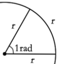

HEY! this is my canvas page
Rect
Browser does not support canvas
Path
Browser does not support canvas
Path-2
Browser does not support canvas
A Clock
Browser does not support canvas
Text
Browser does not support canvas
Change
Browser does not support canvas
Image
<
Browser does not support canvas